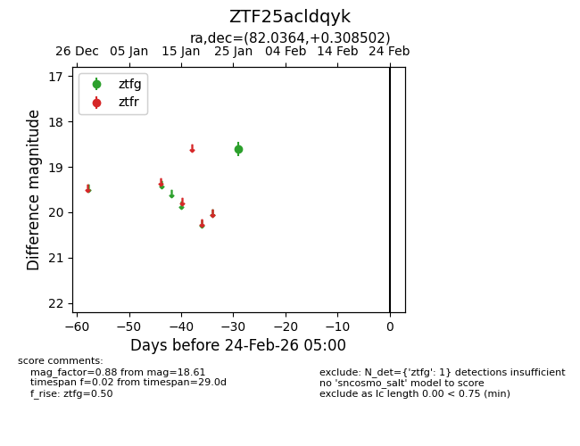
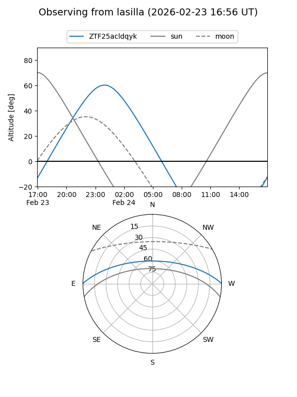
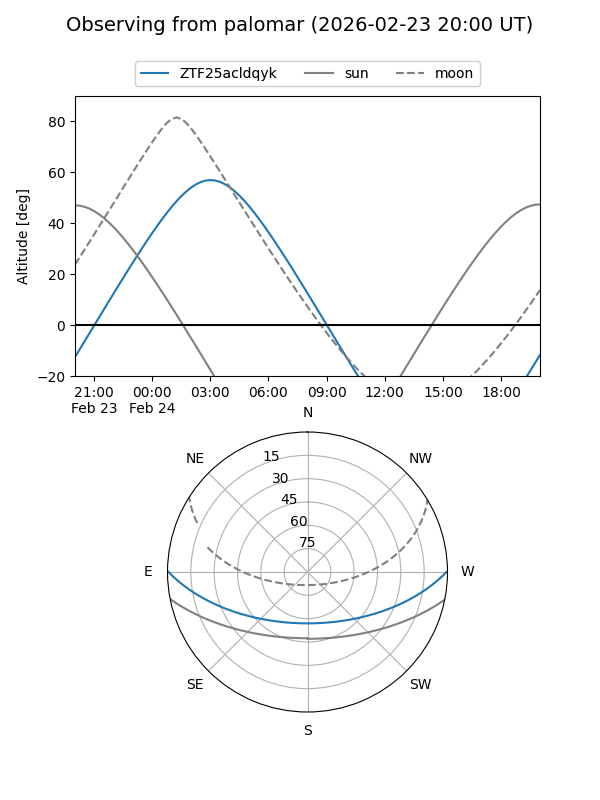

ZTF25acldqyk
Target ZTF25acldqyk at 2026-01-26 08:11
Aliases and brokers:
FINK: link
Lasair: link
ALeRCE: link
alt names
ZTF25acldqyk (ztf,fink_ztf)
Coordinates:
equatorial (ra, dec) = 82.0364,+0.30850
equatorial (HMS+DMS) = 05:28:08.74,+00:18:30.61
galactic (l, b) = (202.8085,-18.29540)
Flags:
Photometry:
last ztfg=18.61
1 ztfg detections
Lightcurve

Visibility


Additional plots